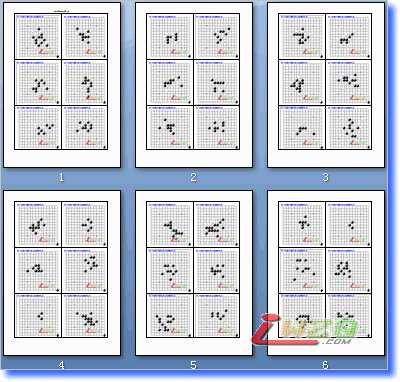

日本连珠天狗道场【全】120题，word版
#1 日本连珠天狗道场【全】120题，word版 作者：有志青年 发表时间：2007-10-20 11:04:17
日本五子棋（连珠）制作的天狗道场习题库，国内流传的合计120道题目，现将所有120道题目以word文件的形式发布出来，这样可以打印后阅读了，后期会将对应的习题答案公布出来。
【上】为1-60题，word共计10页
【下】为61-120题，word共计10页

#2 Re:日本连珠天狗道场【全】120题，word版 作者：【乐在棋中】 发表时间：2007-10-20 12:22:39
下来看看！#3 Re:日本连珠天狗道场【全】120题，word版 作者：天上人间12 发表时间：2007-10-20 18:53:45
好东西啊看看#4 Re:日本连珠天狗道场【全】120题，word版 作者：ycx007 发表时间：2007-10-21 11:29:11
谢谢了！#5 Re:日本连珠天狗道场【全】120题，word版 作者：小丸.net 发表时间：2007-10-23 14:43:54
 天狗道场.zip
天狗道场.zip这是SGF版本的，用RENLIB的读入功能可以将１２０题合并为LIB文件
#6 Re:日本连珠天狗道场【全】120题，word版 作者：yidefei 发表时间：2007-10-28 13:02:43
好像在哪看到过有360题的天狗题目。有没有答案呢？有一些题目很难想到答案哪#7 Re:日本连珠天狗道场【全】120题，word版 作者：有志青年 发表时间：2007-10-28 15:06:47
哪里有360题的？解不出的题目可以发到习题交流板块中交流哟#8 Re:日本连珠天狗道场【全】120题，word版 作者：笨蛋020 发表时间：2007-11-17 0:25:17
大哥用软件解啊#9 Re:日本连珠天狗道场【全】120题，word版 作者：秋千 发表时间：2007-11-22 8:47:41
太好了,下#10 Re:Re:日本连珠天狗道场【全】120题，word版 作者：小丸.net 发表时间：2007-11-22 10:45:39
引用：
原文由 笨蛋020 发表于 2007-11-17 0:25:17 :
大哥用软件解啊
用软件解还不如不解呢，能学到什么东西。
#11 Re:日本连珠天狗道场【全】120题，word版 作者：被逼注册 发表时间：2008-7-5 22:59:02
厄，我解不出的题目用软件看答案，我也用软件检查看白有没有强防
#12 Re:日本连珠天狗道场【全】120题，word版 作者：无恙清晨 发表时间：2008-7-6 0:42:33
开始学习~~~THX
#13 Re:日本连珠天狗道场【全】120题，word版 作者：石投 发表时间：2008-7-7 19:55:42
好噢~~~太太太太太谢谢了
#14 Re:日本连珠天狗道场【全】120题，word版 作者：五星若连珠 发表时间：2009-1-6 22:07:55
这里居然有，下载打印去了。

#15 Re:日本连珠天狗道场【全】120题，word版 作者：爱下不下 发表时间：2009-3-8 10:05:36
谢谢了，好东西收藏了！
#16 Re:日本连珠天狗道场【全】120题，word版 作者：卓越十九 发表时间：2009-8-1 13:40:23
希望能提供本习题的对应答案
#17 Re:日本连珠天狗道场【全】120题，word版 作者：用心学习 发表时间：2009-12-18 15:47:31
谢谢了，希望答案上还有解析#18 Re:日本连珠天狗道场【全】120题，word版 作者：大雪无痕 发表时间：2009-12-18 15:54:22
好东西啊，学习一下
#19 Re:日本连珠天狗道场【全】120题，word版 作者：火神 发表时间：2009-12-20 7:31:37
想看看呀，学习学习呀#20 Re:日本连珠天狗道场【全】120题，word版 作者：牛生蛋 发表时间：2010-3-23 19:54:03
希望能提供本习题的对应答案#21 Re:日本连珠天狗道场【全】120题，word版 作者：晓棋子 发表时间：2010-5-20 10:21:22
请问答案在哪里有？#22 Re:日本连珠天狗道场【全】120题，word版 作者：小武 发表时间：2010-6-4 11:31:14
学习学习 感谢
#23 Re:日本连珠天狗道场【全】120题，word版 作者：小武 发表时间：2010-6-4 11:31:40
学习学习 很是感谢#24 Re:日本连珠天狗道场【全】120题，word版 作者：纳米 发表时间：2010-6-7 13:36:48
图上的爱五子棋图标有点碍眼，请问有什么办法去年吗？
#25 Re:日本连珠天狗道场【全】120题，word版 作者：角鬥士 发表时间：2010-11-27 14:26:31
好东西啊看看#26 Re:日本连珠天狗道场【全】120题，word版 作者：晴天雨天 发表时间：2011-1-7 20:31:27
非常好的资料。学习学习。谢谢。#27 Re:日本连珠天狗道场【全】120题，word版 作者：三国老凯 发表时间：2011-1-7 20:58:21
买个打印机多少钱啊？威望多少RMB一个啊 ？求威望